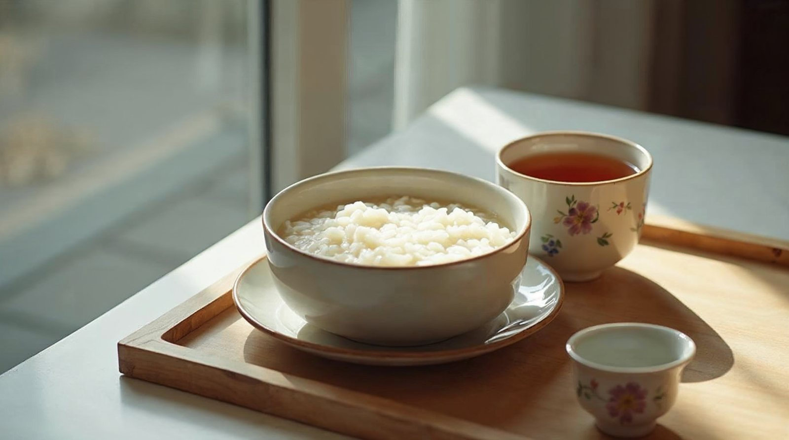
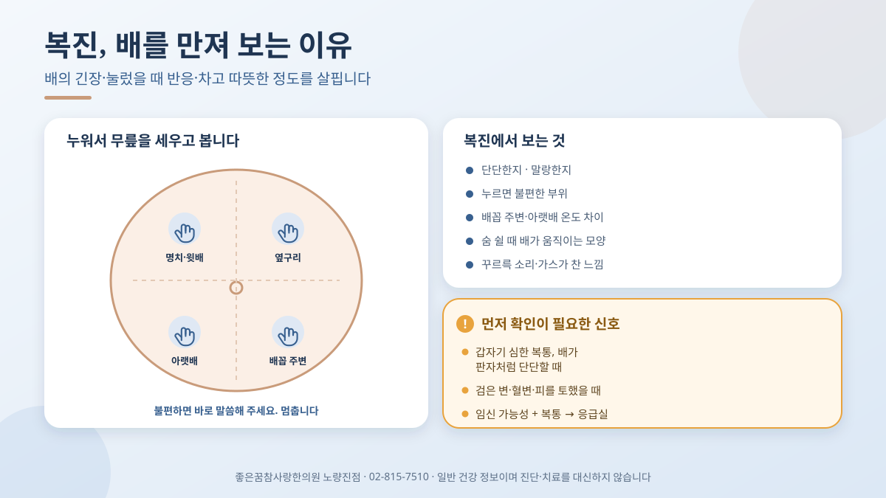

이종호 한의사 감수좋은꿈참사랑한의원 대표원장 (한의사 면허번호 19769)발행 2026-11-23 · 수정 2026-11-26
이 글의 차례
복진은 편하게 누운 자세에서 배를 손으로 가볍게 눌러 보며 긴장도와 눌렀을 때의 반응, 차고 따뜻한 정도를 살피는 진찰입니다. 소화가 불편하거나 배가 차다고 느낄 때, 몸이 전체적으로 굳어 있을 때 몸 상태를 가늠하는 단서로 쓰며, 갑자기 시작된 심한 복통은 한의원보다 가까운 응급실이 먼저입니다.
왜 배를 만져 보나요
- 소화 불편은 말로 설명하기 어려운 경우가 많아, 손으로 느껴지는 긴장과 반응이 함께 참고가 됩니다.
- 한의학에서는 배의 단단함과 온도 차이를 소화와 몸의 긴장 상태를 살피는 단서로 봅니다.
- 같은 더부룩함이라도 배의 모습이 다르면 생활 조언과 진료 방향이 달라질 수 있습니다.
- 배가 차거나 단단한 느낌은 본인이 먼저 알아차리기 어려운 경우도 있어, 손으로 확인하면 생활 이야기를 나누는 실마리가 됩니다.
- 숨을 쉴 때 배가 얼마나 부드럽게 움직이는지 보면, 평소 긴장한 채로 얕게 숨을 쉬는지 짐작하는 데 참고가 됩니다.

복진에서 보는 것
- 배가 전체적으로 단단한지, 말랑한지
- 누르면 아프거나 불편한 부위가 있는지
- 배꼽 주변과 아랫배의 온도 차이
- 숨 쉴 때 배가 움직이는 모양
- 꾸르륵거리는 소리나 가스가 찬 느낌이 잦은지
- 숨을 들이쉬고 내쉴 때 배가 땅기거나 불편한 곳이 있는지
- 갈비뼈 아래 명치 양옆을 눌렀을 때 단단하거나 답답한지
눌렀을 때 조금 불편하다고 해서 모두 그 자리에 병이 있다는 뜻은 아닙니다. 긴장된 근육도 누르면 불편할 수 있어, 한 가지 반응보다 떨어진 자리와의 차이, 말씀해 주신 증상을 함께 놓고 봅니다.
다만 살짝만 눌러도 심하게 아프거나 배가 딱딱하게 굳어 있을 때, 열이나 구토가 함께 있을 때는 복진을 이어 가지 않고 가까운 응급실부터 안내합니다.
먼저 이렇게 여쭙니다
- 식사 뒤 얼마 만에 불편해지고, 얼마나 이어지나요?
- 대변은 며칠에 한 번, 어떤 모양인가요? 소변은 편하신가요?
- 배나 손발이 차다고 느끼시나요?
- 잠은 어떻고, 긴장하면 배가 먼저 불편해지나요?
- 최근 내시경이나 복부 초음파 검사를 받으셨나요?
- 임신 중이거나 가능성이 있나요?
예를 들면 이런 경우입니다
- 예를 들어 점심을 급히 먹고 오후마다 더부룩하며 어깨도 늘 뭉친다는 직장인이라면, 명치 주변이 단단한지 살피면서 식사 속도와 업무 중 긴장을 함께 여쭙습니다.
- 예를 들어 시험이 다가오면 배가 자주 아프고 화장실을 찾게 된다는 수험생이라면, 배의 긴장과 함께 잠드는 시각, 아침 식사, 긴장이 커지는 때를 같이 봅니다.
- 예를 들어 아랫배가 늘 차고 변비가 잦다는 어르신이라면, 배꼽 위아래의 온도 차이와 함께 하루에 마시는 물, 걷는 양, 복용 중인 약을 확인합니다.

일상에서 먼저 해 볼 수 있는 것
- 끼니 시간을 일정하게 정하고 천천히 꼭꼭 씹어 먹기
- 식사 직후 바로 눕지 말고 10분쯤 가볍게 걷기
- 배가 차게 느껴지면 찬 음료를 줄이고 잘 때 배를 덮고 자기
- 긴장될 때 어깨를 내리고 숨을 천천히 길게 내쉬어 보기
스스로 점검해 보세요
- 식사 뒤 배가 땅기거나 단단해지는 느낌이 자주 든다
- 긴장하면 배가 먼저 아프거나 화장실에 가고 싶어진다
- 배꼽 아래가 손으로 만졌을 때 다른 곳보다 차게 느껴진다
- 가스가 자주 차고 꾸르륵 소리가 잦다
- 변비와 묽은 변이 번갈아 나타난다
- 숨을 깊게 들이쉬기 어렵고 어깨가 먼저 올라간다
여러 항목에 해당하면 진료 때 함께 말씀해 주세요. 배를 살필 때 어디를 더 볼지 정하는 데 도움이 됩니다.
얼마나 지켜보고, 언제 상담하면 좋을까요
- 과식이나 찬 음식 뒤 하루 이틀 더부룩한 정도라면 식사를 가볍게 하며 지켜볼 수 있습니다.
- 더부룩함, 배의 땅김, 배변 불편이 2~4주 넘게 이어지거나 일주일에 여러 번 반복된다면 진료를 받아 보시길 권합니다.
- 갑자기 시작된 심한 복통, 검은 변이나 혈변이 있거나 복통에 열과 구토가 함께 있다면 기다리지 말고 가까운 응급실로 가세요.

진료실에서는 이렇게 진행됩니다
편한 자세로 누워 무릎을 세운 상태에서 손으로 가볍게 만져 보며, 불편하면 바로 말씀해 주시면 멈춥니다. 식사 직후나 방광이 가득 찼을 때는 불편할 수 있어 진료 직전에는 식사를 과하게 하지 않는 것이 좋습니다. 임신 중이거나 임신 가능성이 있다면 눕기 전에 먼저 알려 주세요.
좋은꿈참사랑한의원에서는 먼저 소화 불편과 생활을 충분히 듣고, 진맥을 기본으로 하고 필요하다고 판단될 때 복진과 함께 설진으로 몸 상태를 살핀 뒤 침이나 한약 상담 등 상태에 맞는 방법을 정합니다.
첫 방문에는 불편이 언제, 어떤 식사 뒤에 생기는지와 잠·대소변·몸의 온기·마음의 긴장을 먼저 여쭙고, 경고 신호가 없는지 확인한 뒤 맥을 짚습니다. 이어서 혀를 보고, 필요하다고 판단되면 누운 자세에서 배의 긴장과 온기, 불편한 자리를 살핍니다.
가져오신 식사 기록이나 내시경·초음파 결과를 함께 보고, 오늘 살핀 내용과 치료 방향, 다음 진료까지 바꿔 볼 생활 한 가지를 설명드립니다. 다시 오실 때도 맥부터 다시 짚습니다.

이렇게 기록해 오시면 상담이 쉬워집니다
- 식사 뒤 몇 분 만에 불편해지는지, 얼마나 이어지는지
- 더부룩함, 신물, 쓰림, 설사, 변비 가운데 어느 쪽이 큰지
- 복용 중인 약, 술 섭취 여부와 최근 체중 변화
- 받은 내시경·초음파 검사 결과(있다면)
- 눌렀을 때 아팠던 자리와 그 무렵 먹은 음식
- 하루에 마시는 물과 커피의 양
소화 불편이 주된 고민이라면 식후 더부룩함 글도 함께 참고하세요.
이런 증상은 먼저 확인이 필요합니다
- 갑자기 시작된 심한 복통, 살짝 눌러도 심하게 아프거나 배가 판자처럼 딱딱하게 굳은 경우
- 검은 변, 혈변, 피를 토한 경우
이런 신호가 있으면 한의원보다 가까운 병원이나 응급실을 먼저 찾으세요.
함께 읽으면 좋은 글
- 한의원 문진에서 몸의 따뜻함, 소화, 잠, 대소변, 통증은 왜 함께 묻나요?
- 허리가 아파서 왔는데 대변과 소변은 왜 묻나요?
- 허리나 목이 아파서 갔는데 배와 팔을 눌러 보는 이유는 무엇인가요?

여쭙는 것
- 식사 뒤 얼마 만에 불편해지고, 얼마나 이어지나요?
- 대변은 며칠에 한 번, 어떤 모양인가요? 소변은 편하신가요?
- 배나 손발이 차다고 느끼시나요?
생활에서 해 볼 것
- 끼니 시간을 일정하게 정하고 천천히 꼭꼭 씹어 먹기
- 식사 직후 바로 눕지 말고 10분쯤 가볍게 걷기
- 배가 차게 느껴지면 찬 음료를 줄이고 잘 때 배를 덮고 자기
먼저 확인이 필요한 신호
- 갑자기 시작된 심한 복통, 살짝 눌러도 심하게 아프거나 배가 판자처럼 딱딱하게 굳은…
- 검은 변, 혈변, 피를 토한 경우
한눈에 보는 표
| 구분 | 핵심 |
|---|---|
| 여쭙는 것 | 식사 뒤 얼마 만에 불편해지고, 얼마나 이어지나요? 대변은 며칠에 한 번, 어떤 모양인가요? 소변은 편하신가요? |
| 생활에서 해 볼 것 | 끼니 시간을 일정하게 정하고 천천히 꼭꼭 씹어 먹기 식사 직후 바로 눕지 말고 10분쯤 가볍게 걷기 |
| 먼저 확인이 필요한 신호 | 갑자기 시작된 심한 복통, 살짝 눌러도 심하게 아프거나 배가 판자처럼 딱딱하게 굳은 경우 검은 변, 혈변, 피를 토한 경우 |
자주 묻는 질문
배를 눌렀을 때 아프면 이상이 있는 건가요?
눌렀을 때 아픈 이유는 다양하며 한 가지로 단정하지 않고, 필요하면 다른 의료기관 검사를 권합니다. 다만 살짝 눌러도 심하게 아프거나, 배가 딱딱하게 굳었거나, 열·구토가 함께 있다면 가까운 응급실을 먼저 찾으세요.
옷은 어떻게 입고 가면 되나요?
배를 확인하기 쉬운 편한 옷이 좋습니다.
모든 환자가 복진을 받나요?
아닙니다. 맥부터 짚어 보고, 말씀해 주신 증상에 따라 필요하다고 판단될 때 합니다.
복진은 아프지 않나요?
손으로 가볍게 눌러 보며 살피는 진찰입니다. 누르는 동안 불편하거나 아프면 바로 말씀해 주세요. 곧바로 멈춥니다.
임신 중에도 복진을 하나요?
임신 중이거나 가능성이 있으면 미리 알려 주세요. 필요한지 먼저 판단하고, 하지 않는 경우도 있습니다.
좋은꿈참사랑한의원은 재진 때 지난번 이야기부터 이어서 여쭙니다. 진료시간과 예약은 오시는 길에서 확인하세요.
어디서 상담받을 수 있나요?
좋은꿈참사랑한의원은 서울 동작구 만양로2길 2 신성빌딩 3층·5층(서울 동작구 상도동, 7호선 상도역 3번 출구 근처)에 있습니다. 한의사 3명(이종호 대표원장, 조영기 수석진료원장, 정원영 진료원장)이 진료합니다. 진료시간은 평일 09:30~20:00(점심 13:00~14:00), 토·일·공휴일 09:30~15:00이며, 방문 전 전화로 확인을 권합니다. 예약은 네이버 예약, 카카오톡 상담, 전화 02-815-7510로 받습니다.
이 글은 일반적인 건강 정보이며 개인의 진단이나 치료를 대신하지 않습니다. 증상이 있거나 복용 중인 약이 있다면 진료를 통해 확인하세요. 치료 효과는 개인마다 다를 수 있습니다.
작성 기준: 일반적으로 알려져 있는 건강 정보를 참고해 정리했습니다(대표원장 감수). 증상 기록은 1~2주 동안 하루 1회, 비슷한 시간에 적어 오시면 지난 상태와 비교하기 쉽습니다.